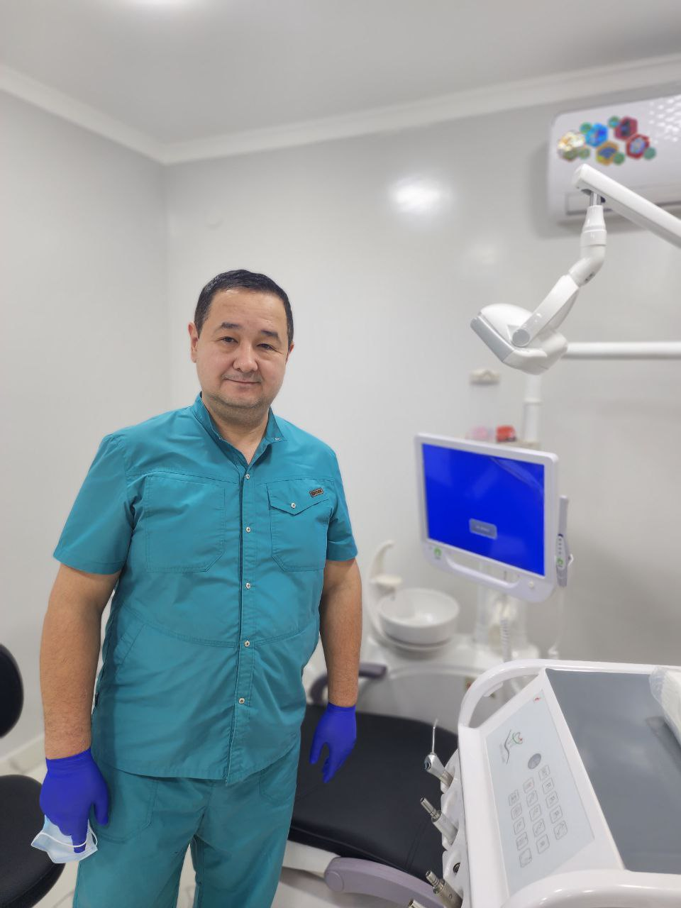

Dental clinic "Stomamoks-Nukus" was founded in 2009 and since then has managed to earn the trust and respect of its many patients. Today, dentistry Stomamoks-Nukus is not only the largest dental center in the city of Nukus, but one of the highest class clinics in Uzbekistan.
 "Stomamoks-Nukus" clinic provides patients with high-quality services in all areas of modern
medicine in
the field of dentistry. Dental treatment here is carried out using the latest technology, which
completely eliminates any discomfort, and also gives a quick and lasting result.
The latest equipment, experienced doctors working in close contact with each other, the system of
internal quality control of services - all this allows us to guarantee a high level of service. It
is
important for us that quality treatment is available to everyone. Thanks for trusting us! We work
for
your smile!
"Stomamoks-Nukus" clinic was founded by Dr Rashid Abdreymov. Rashid Abdreymov is a dentist of the
highest category. He graduated from the Tashkent State Medical Institute in 1995 and has since
started his career in the field of dentistry. For almost 30 years, Dr. Rashid has been helping
people achieve the smile of their dreams. He opened his private clinic "Stomamoks-Nukus" in 2009,
which is currently one of the most popular and best dentistry not only in Nukus but also in
Uzbekistan.